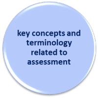

Delta Module One Course
 |
Syllabus area 6
|
|  |
This section of the syllabus covers these three areas and you should be able to:
|
To be able to do this you need a knowledge of assessment. There is only one guide devoted to the area. You should follow it and then return to this page to try some tests of your knowledge.
 |
The very brief overview of what you need to know |
Testing and assessment is a technical area requiring design,
mathematical and psychological skills, some of which are beyond the
brief (or interests) of many teachers who have no ambition to become
designers of public examinations or generic international or
national tests.
Nevertheless, expert teachers constantly assess and evaluate their
learners' abilities by, for example, listening to them, reading
what they write or constructing progress tests of one kind or
another. It is not an exaggeration to say that a teacher's
ability to evaluate learners' abilities is a factor without which
little effective teaching and learning will take place.
A basic understanding of key concepts such as formative vs.
summative testing, formal vs. informal testing, validity,
reliability and practicality is essential for any teacher.
In addition, of course, the ability to construct good questions in
the classroom and effective, varied, targeted and valid tests of our students'
abilities is essential.
The guides linked here are intended to encourage these skills and
that knowledge.
| Syllabus areas | Guides to these areas |
| Diagnostic, formative, summative assessment | The guide to assessment |
| Asking good questions (a simple guide to a difficult skill) | |
| The guide to assessing Listening Skills | |
| Concepts of validity, reliability, impact and practicality | The guide to assessing Reading Skills |
| The guide to assessing Speaking Skills | |
| Widely available tests and purposes for which they are used | The guide to assessing Writing Skills |
| The guide to assessing Vocabulary |
Once you have worked your way through the guide and
done some research,
it's time to test your knowledge in these areas and then do
some revision exercises.
There is a section of the
Delta Module One Revision Course for this area of the syllabus.
First step: do a few tests.
Second step: apply your knowledge to the examination tasks.
 |
 |
| course index | exam practice |